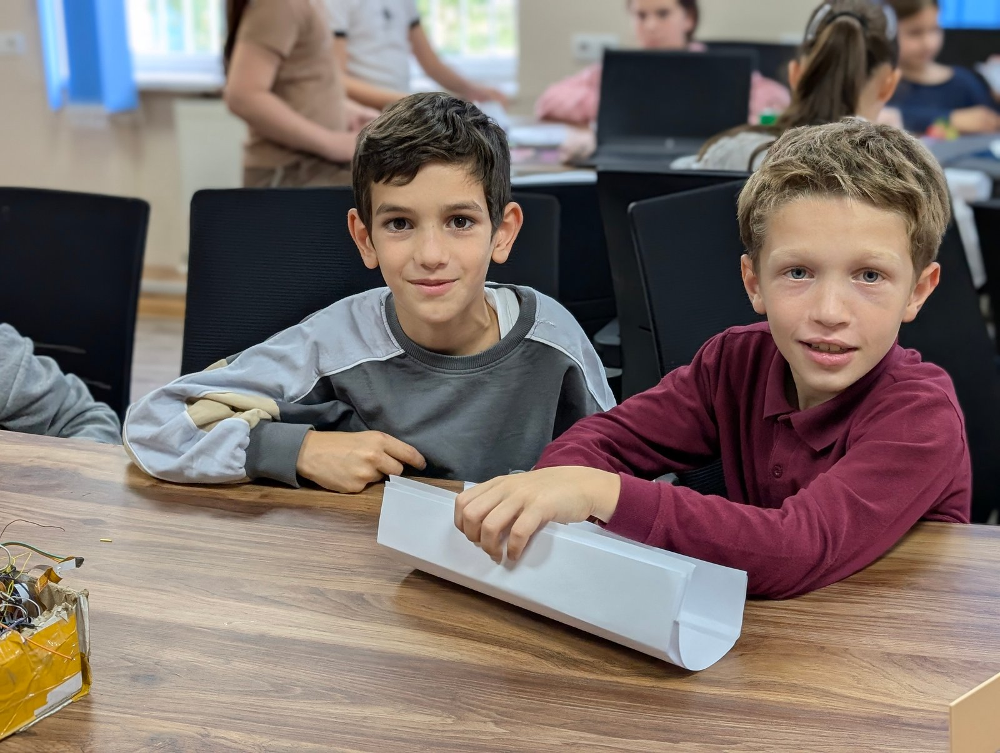
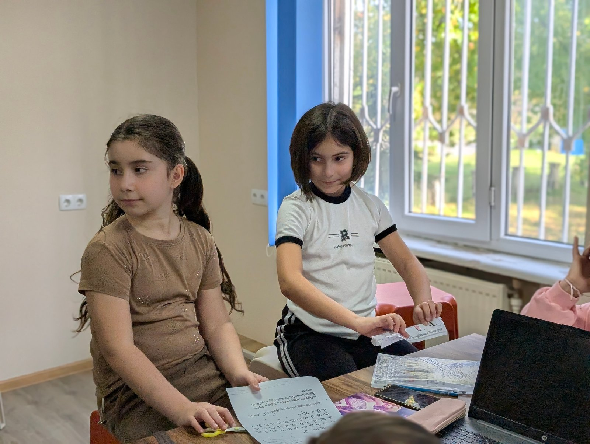
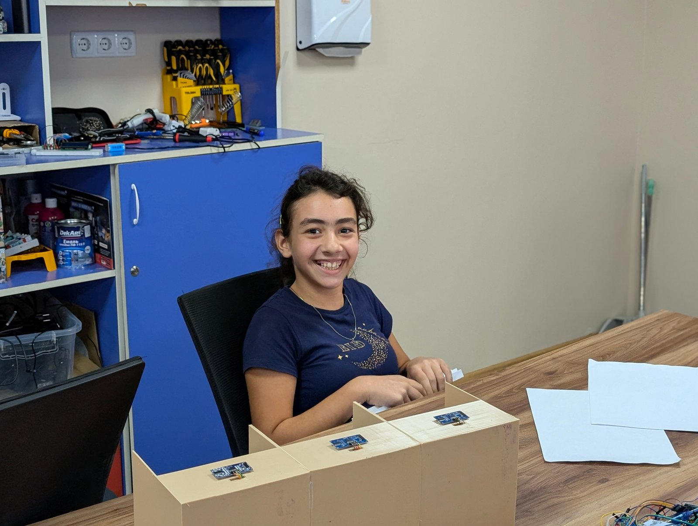

მოიფიქრე კონსტრუქცია
როგორი ფორმა დაეხმარება ქაღალდის ხიდს სიმტკიცის შენარჩუნებაში?
RoboSpark / საინჟინრო გამოწვევა
შექმენი. გამოსცადე. გააუმჯობესე.
საინჟინრო გამოწვევა: ქაღალდის ხიდების შექმნა, კონსტრუქციის ფორმის გამოცდა და იდეების გაუმჯობესება.

პროექტის შესახებ
რობოტიკის კლუბის მორიგ საინჟინრო გამოწვევაში მოსწავლეებმა ხიდების კონსტრუქციებზე იმუშავეს. მათ საკუთარი იდეები გამოსცადეს და გაიგეს, რამდენად მნიშვნელოვანია კონსტრუქციის ფორმა, მასალების სწორად გამოყენება და სიმტკიცე.
აქტივობამ ხელი შეუწყო საინჟინრო და შემოქმედებითი აზროვნების განვითარებას. დაშვებულმა შეცდომებმა დაგვანახა, რა მუშაობს უკეთ და როგორ შეგვიძლია იდეების გაუმჯობესება.
როგორი ფორმა დაეხმარება ქაღალდის ხიდს სიმტკიცის შენარჩუნებაში?
დააკვირდი კონსტრუქციას და მასალების გამოყენებას.
შეცდომა გამოიყენე ახალი გადაწყვეტილების მოსაძებნად.
პროექტის მასალები

